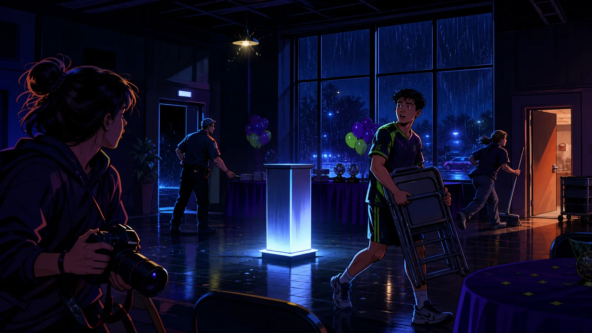
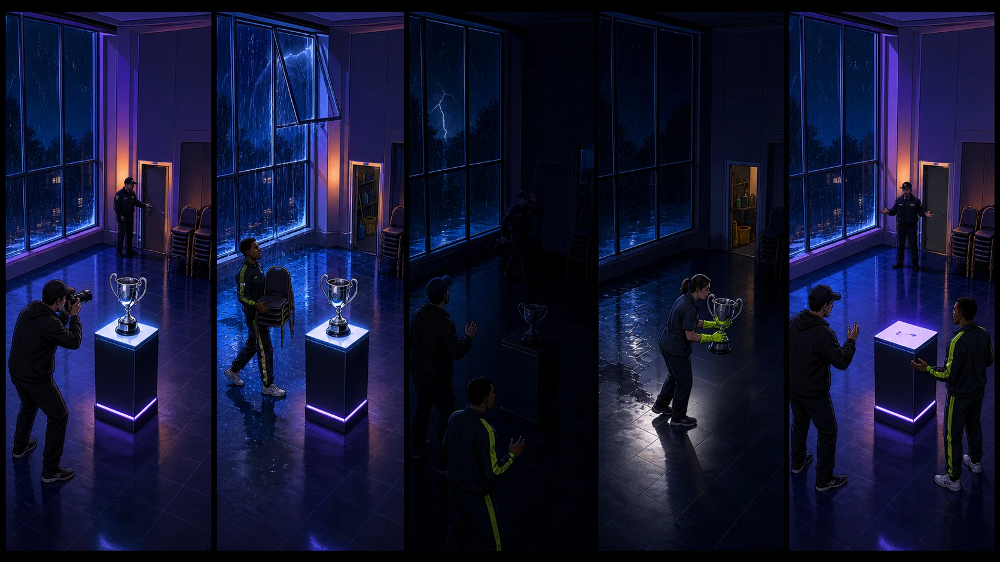
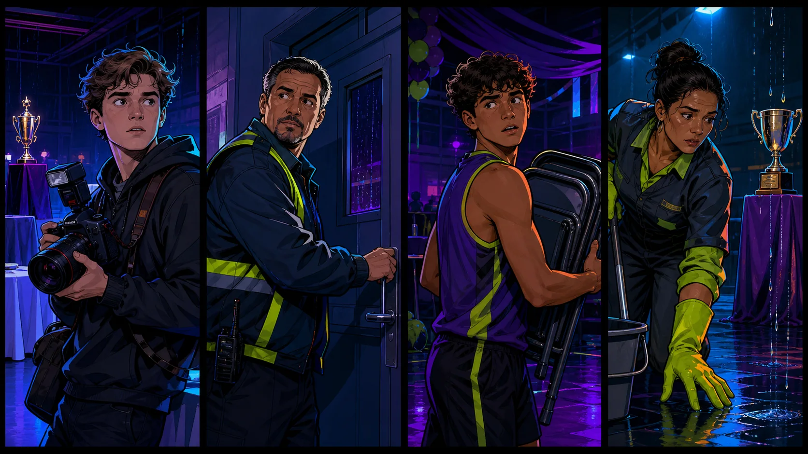
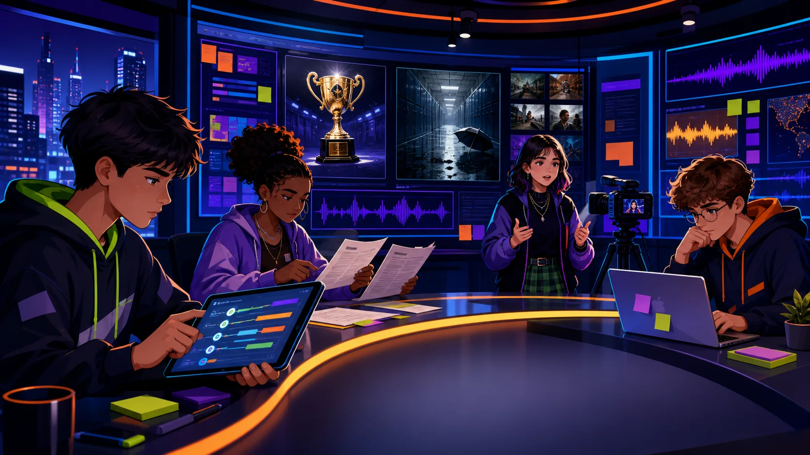

Rule
Name the habit
“Before I repost, I check the original source.”

Past Simple vs Past Continuous | Crime & News Stories. Reconstruct the night. Separate background from breaking events. Report only what the evidence supports.
Choose a time zone from yesterday evening. Give one true or invented answer, then ask a follow-up.
“Before I repost, I check the original source.”
“Without context, a true detail can create a false story.”
“I tried it yesterday, and I noticed…”
Use Past Continuous for actions in progress and Past Simple for completed events.
Build accurate sentences with when and while.
Understand clues, witness statements, timelines, and short news reports.
Deliver a careful update with background, events, evidence, and a correction.
Tap, read the stress map, then repeat twice: careful → newsroom speed.
The guard was checking the door when the lights went out.
+ subject + was/were + verb-ing
− subject + wasn't/weren't + verb-ing
? Was/Were + subject + verb-ing?+ subject + past form
− subject + didn't + base verb
? Did + subject + base verb?
The athlete was carrying chairs ___ the lights went out.
___ the guard was checking the door, rain entered the hall.
The cleaner was mopping ___ she noticed water near the cup.
The cup was safe in storage ___ everyone was searching the hall.
“The guard was checking the door.”
A live report can be early, incomplete, and still careful. Predict before you read.
At 9:17 on Saturday evening, the lights went out inside Westbridge Community Hall. Staff were preparing for a youth sports award ceremony when the room suddenly became dark.
Event photographer Leo Park was taking pictures of the championship cup. Security guard Omar Nadirov was checking a side door, and athlete Ben Ortiz was carrying chairs across the hall. Near the windows, cleaner Ana Cruz was mopping the floor.
Forty seconds later, the lights came back on. The cup was no longer on its pedestal. No window was broken, and the side door was still locked. While organizers were searching the room, a dramatic message online claimed that a thief had entered the building. Police had not confirmed that claim, and reporters had no evidence of a break-in.
The night desk asked witnesses what they were doing when the blackout started. Their answers created a timeline—but one important detail was still missing.
“The lights went out.”
“Staff were preparing for the ceremony.”
“Ben was carrying chairs.”
“The lights came back on.”
“Organizers were searching the room.”
“A message claimed that a thief entered.”


Use at least two Past Continuous verbs, three Past Simple verbs, when/while, and one sentence correcting the rumor.
Write eight sentences: four background actions and four completed events. Join them into four when/while sentences.
Use witness, evidence, clue, alibi, investigate, and headline in a mini case summary.
Write a 120-word fictional news report: headline, background, event, witnesses, and corrected conclusion.
Prepare a 45-second eyewitness statement. Optional challenge: include one detail that sounds suspicious but has an innocent explanation.